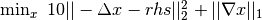
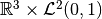

Using ODL with ProxImaL¶
Proximal is a Python-embedded modeling language for image optimization problems and can be used with ODL to solve typical inverse problems phrased as optimization problems. The package is especially suited for non-differentiable problems such as total variance denoising.
Here is a minimal example of solving Poisson's equation equation on an interval with a TV type regularizer ():
>>> space = odl.uniform_discr(0, 1, 5)
>>> op = -odl.Laplacian(space)
>>> proximal_lang_op = odl.as_proximal_lang_operator(op)
>>> rhs = space.element(lambda x: (x>0.4) & (x<0.6)) # indicator function on [0.4, 0.6]
>>> x = proximal.Variable(space.shape)
>>> prob = proximal.Problem([10 * proximal.sum_squares(x - rhs.asarray()),
... proximal.norm1(proximal.grad(x))])
>>> opt_val = prob.solve()
>>> print(opt_val)
36.082836566
>>> x.value
array([ 0.02352054, 0.02647946, 0.9 , 0.02647946, 0.02352054])
Note that this requires the latest version of ProxImaL (version>0.1.4).
Notable differences between ODL and ProxImaL¶
It may be tempting to try to convert an arbitrary problem from ODL into ProxImaL, but some differences exist.
Norms¶
Norms in ODL are scaled according to the underlying function space. Hence a sequence of statements converging discretizations give rise to a converging norm:
>>> for n in [2, 10, 100, 10000]:
... space = odl.uniform_discr(0, 1, n)
... print('{:.10}'.format(space.element(lambda x: x).norm()))
0.5590169944
0.5766281297
0.5773430523
0.5773502685
>>> 1 / np.sqrt(3) # exact result
0.57735026918962584
this is not the case in ProxImaL, where the norm depends on the number of discretization points. Hence a scaling that is correct for a problem in ODL needs not be correct in proximal. This also changes the definition of things like the operator norm.
This also has the added effect of changing the definition of derived features, like the spectral norm of operators.
Spaces¶
ODL can represent some complicated spaces, like  through the ProductSpace class:
>>> space = odl.ProductSpace(odl.rn(3), odl.uniform_discr(0, 1, 5))
This can then be used in solvers and other structures. ProxImaL currently lacks an equivalent structure.